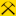

Loneversickerung
Useful Information
| Location: |
89182 Bernstadt.
(48.510669, 10.018600) |
| Open: |
no restrictions. [2026] |
| Fee: |
free. [2026] |
| Classification: |
 Ponor
Dry Valley Ponor
Dry Valley
 UNESCO Global Geopark Schwäbische Alb |
| Light: | n/a |
| Dimension: | |
| Guided tours: | self guided |
| Photography: | allowed |
| Accessibility: | yes |
| Bibliography: | |
| Address: | |
| As far as we know this information was accurate when it was published (see years in brackets), but may have changed since then. Please check rates and details directly with the companies in question if you need more recent info. |
|
History
Description
The Loneversickerung (Lone river sink) is not a specific location, but rather a stretch of the small river characterised by the fact that, over a distance of a few kilometres, the water level steadily decreases until the riverbed is finally completely dry.
The Upper Lone rises at the Lone spring and flows roughly as far as Breitingen, where the water seeps away for most of the year.
Similar to the
Danube sink
the water that disappears here re-emerges at the source of a completely different stream, namely the Nau near Langenau.
From the Mehlsackfelsen behind Breitingen to the hamlet of Lontal, the Lone Valley now only has a stream here during periods of particularly heavy rainfall.
In dry years, the Lone even seeps away as early as the Häldelesfels.
At the springs near Lontal, which form the lower Lone, water emerges that has seeped away on the Alb plateau near Dettingen am Albuch.
However, sometimes even these springs dry up, and water can only be found in the Lone’s bed near its confluence with the Hürbe.
How should one interpret this geological situation? On the one hand, these are obviously ponors, i.e. places where the water disappears underground. Furthermore, these are ponors that cannot fully absorb the stream; this sub-type is called a schlinger. But there is also another way of looking at it: the Lone Valley is in the process of turning into a dry valley. This happens constantly in karst areas. The streams carry water and deepen a valley because the karstification has not yet progressed far enough for all the water to flow underground. The fissures simply have not widened sufficiently yet. But at some point, the caves reach a size that can absorb all the water, at least during low water, and we have the current situation in the Lone Valley. The caves continue to grow larger, whilst erosion – and thus the deepening of the valley – decreases, because the stream now only flows for part of the year. The dry periods are getting longer and longer; eventually, the stream bed will only carry water during snowmelt and heavy rain, then only in very wet years, and eventually it will stop altogether.
As mentioned, the Lone sink area is not a particular place. A footpath leads from the car park at the northern end of Bernstadt to the Kahlenstein rock and on to Fohlenhaus cave. However, in a typical summer, you can already admire the dry bed of the Lone from the bridge on the country road crossing the river. It is worth walking from the Mill Museum in Breitingen to this car park; these two kilometres are, in most years, the area where the river seeps away. An additional highlight are the many beaver dams, some of which still hold the water even after it has seeped away.
 Search DuckDuckGo for "Loneversickerung"
Search DuckDuckGo for "Loneversickerung" Google Earth Placemark
Google Earth Placemark OpenStreetMap
OpenStreetMap
 Index
Index Topics
Topics Hierarchical
Hierarchical Countries
Countries Maps
Maps